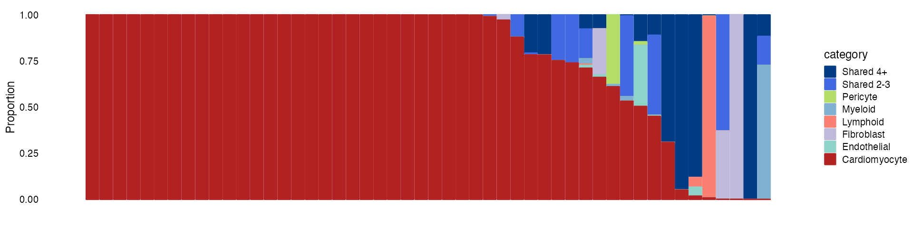

partition_pip_tutorial.RmdHere, we show an example using data from our heart single-cell study. We assigned the likely cell type(s) through which the causal variants act in each locus using fine-mapped SNPs, and cell-type specific open chromatin regions (OCRs).
Required input data:
Load R packages
Load fine-mapping summary statistics.
finemap <- readRDS(system.file("extdata", "aFib_Finemapped.tble.rds", package = "mapgen"))
finemap.gr <- process_finemapping_sumstat(finemap, snp = 'snp', chr = 'chr',
pos = 'pos', pip = 'susie_pip',
pval = 'pval', zscore = 'zscore',
cs = 'CS', locus = 'locus',
pip.thresh = 1e-5,
cols.to.keep = c('snp','chr','pos', 'pip', 'pval','locus'))## Process fine-mapping summary statistics ...
## Filter SNPs with PIP threshold of 1e-05
head(finemap.gr)## GRanges object with 6 ranges and 6 metadata columns:
## seqnames ranges strand | snp chr pos pip
## <Rle> <IRanges> <Rle> | <character> <integer> <integer> <numeric>
## [1] chr9 139082621 * | rs4842129 9 139082621 3.00183e-05
## [2] chr9 139085865 * | rs11103373 9 139085865 1.59627e-05
## [3] chr9 139089679 * | rs7860634 9 139089679 1.94283e-03
## [4] chr9 139089717 * | rs7850466 9 139089717 1.42424e-03
## [5] chr9 139089718 * | rs7847312 9 139089718 1.32523e-03
## [6] chr9 139091460 * | rs2274114 9 139091460 6.54232e-05
## pval locus
## <numeric> <numeric>
## [1] 5.14929 1009
## [2] 4.78489 1009
## [3] 6.99568 1009
## [4] 6.94808 1009
## [5] 6.91045 1009
## [6] 5.46750 1009
## -------
## seqinfo: 20 sequences from an unspecified genome; no seqlengthsLoad genomic annotations (hg19).
genomic.annots <- readRDS(system.file("extdata", "genomic.annots.hg19.gr.rds", package = "mapgen"))Load annotations and cell type OCR peaks (disjoint regions). This is a list of GRanges objects.
OCRs <- readRDS(system.file("extdata", "disjoint_OCRs_hg19.grlist.rds", package = "mapgen"))
summary(OCRs)## Length Class Mode
## Cardiomyocyte 55488 GRanges S4
## Endothelial 17392 GRanges S4
## Fibroblast 27193 GRanges S4
## Lymphoid 6313 GRanges S4
## Myeloid 26975 GRanges S4
## Pericyte 12623 GRanges S4
## Shared 2-3 27532 GRanges S4
## Shared 4+ 36877 GRanges S4Sum of PIPs within cell-type specific OCRs.
sum_pip_res <- partition_pip_regions(finemap.gr, OCRs)
sum.pips <- sum_pip_res$sum.pips
n.snps <- sum_pip_res$n.snps
cat('Sum of PIPs in cell-type specific OCRs\n')## Sum of PIPs in cell-type specific OCRs
head(sum.pips, 3)## Cardiomyocyte Endothelial Fibroblast Lymphoid Myeloid Pericyte Shared 2-3
## 7 0.7663084514 0.000000000 0.00000000 0 0 0 0.0000000000
## 15 0.2173870865 0.004280965 0.08199708 0 0 0 0.0002198158
## 25 0.0001417186 0.000000000 0.00000000 0 0 0 0.0037536142
## Shared 4+
## 7 0.0000000000
## 15 0.0248505012
## 25 0.0003452405
cat('Number of SNPs included:\n')## Number of SNPs included:
head(n.snps, 3)## Cardiomyocyte Endothelial Fibroblast Lymphoid Myeloid Pericyte Shared 2-3
## 7 7 0 0 0 0 0 0
## 15 6 3 6 0 0 0 1
## 25 7 0 0 0 0 0 2
## Shared 4+
## 7 0
## 15 4
## 25 5Filter loci with a cutoff of total PIPs in OCR > 0.25, compute the proportion of PIPs partitioned in each cell type category.
sum.pips.filtered <- sum.pips[rowSums(sum.pips) > 0.25,]
prop.pip.mat <- sum.pips.filtered/rowSums(sum.pips.filtered)
prop.pip.mat <- prop.pip.mat[with(prop.pip.mat, order(-Cardiomyocyte)), ]We can make a structure plot to show the proportion of PIPs in each cell type category.
categories <- c("Cardiomyocyte", "Endothelial", "Fibroblast", "Lymphoid",
"Myeloid", "Pericyte", "Shared 2-3", "Shared 4+")
colors <- c("Cardiomyocyte" = "#b22222", "Endothelial" = "#8DD3C7",
"Fibroblast" = "#BEBADA", "Lymphoid" = "#FB8072",
"Myeloid" = "#80B1D3", "Pericyte" = "#B3DE69",
"Shared 2-3" = "royalblue", "Shared 4+" = "#003C86")
dat <- compile_structure_plot_data(prop.pip.mat, categories = rev(categories))
structure_plot(dat, colors = rev(colors))